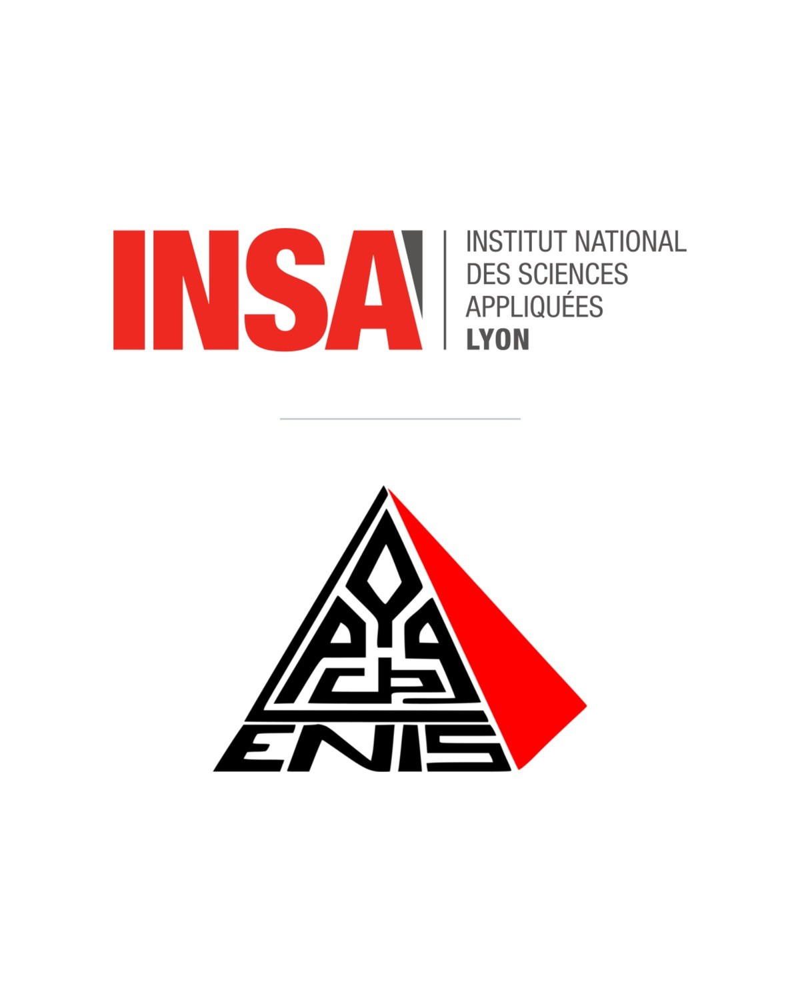
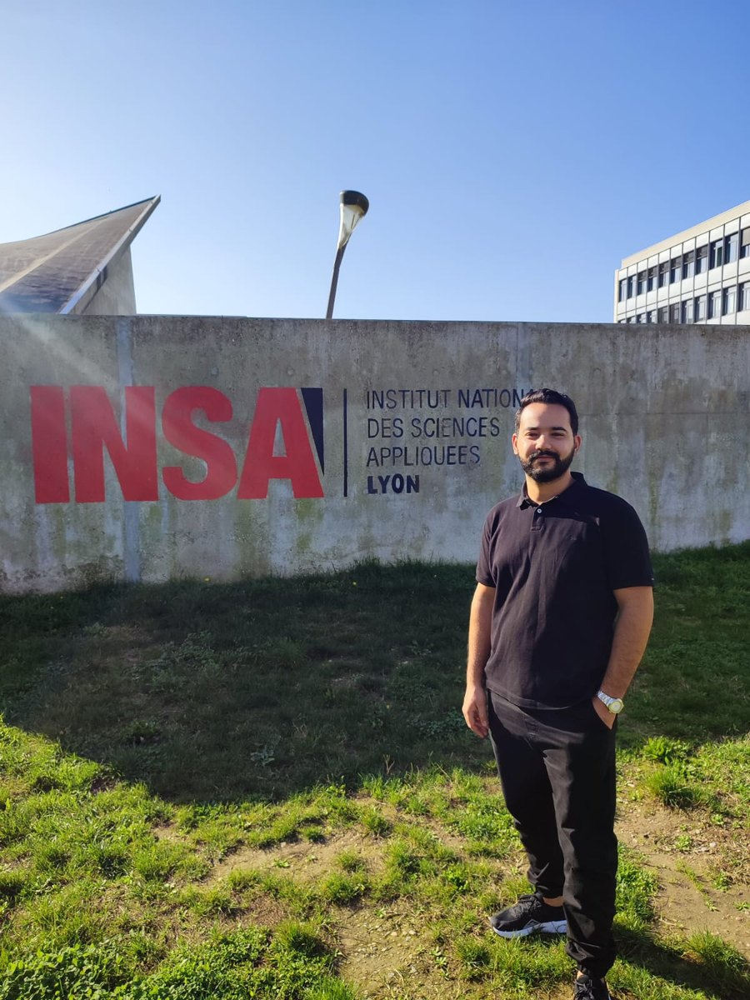
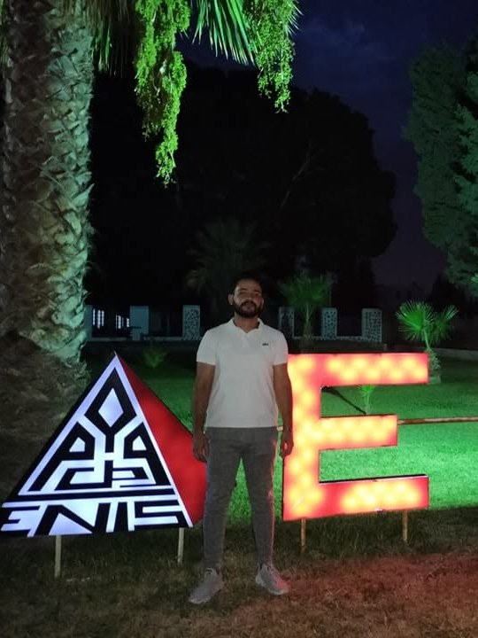

Ingénieur Mécatronique & Automatisme
Amin Driss, diplômé de l'INSA Lyon en génie mécanique, parcours mécatronique et systèmes automatisés. Je conçois et mets en service des systèmes qui associent mécanique, électrique et contrôle-commande : bancs d'essais, machines spéciales, systèmes embarqués.
Disponible immédiatement, à Lyon et en Auvergne-Rhône-Alpes

Ce que je sais faire
Trois métiers que j'ai pratiqués ensemble sur un même système, de la conception jusqu'à la mise en service.
Conception mécanique
Bâtis, capots, convoyeurs et outillages, dimensionnés par le calcul et validés par éléments finis.
SolidWorks, CATIA V5, 3DEXPERIENCE, Ansys, impression 3D
Électrique et électronique
Schémas et câblage d'armoires, chaînes de sécurité, cartes électroniques et conditionnement de capteurs.
Proteus, Altium, KiCad, capteurs, électronique de puissance
Commande et logiciel
Calculateurs sur bus CAN, asservissements en vitesse et en couple, interfaces de supervision.
ACTIA, bus CAN, ESP32, Arduino, C++, Python, MATLAB/Simulink
Projets
8 projets
- Chargement des projets…
Parcours
- 2024 – 2026INSA LyonDiplôme d'ingénieur en génie mécanique, double diplôme avec l'ENIS
- 2022 – 2024École Nationale d'Ingénieurs de Sfax (ENIS)Cycle d'ingénieurs en génie électromécanique. Major de promotion
- 2020 – 2022Institut Préparatoire aux Études d'Ingénieur de SfaxCycle préparatoire
- 2020Baccalauréat technologiqueMention Très Bien


Compétences
- C++ et PythonProgrammation orientée objet et scripts Python pour l'analyse de données et le contrôle des systèmes embarqués.
- Arduino et ESP32Prototypage rapide et développement sur microcontrôleurs pour des applications de mesure et de commande.
- RégulationAsservissements en vitesse et en couple, différentiel électronique, filtrage et fusion de capteurs (filtre de Kalman).
- SimulinkModélisation et simulation de systèmes dynamiques pour l'optimisation des performances mécatroniques.
- LanguesFrançais (C1), anglais (B2)
Contact
Je recherche un premier poste d'ingénieur en mécatronique, automatisme ou conception de machines spéciales.
- Téléphone+33 7 67 99 83 85
- LinkedInamin-driss-insa
- CVTélécharger le PDF
- Portfolio Wixmedamindriss.wixsite.com
- LocalisationLyon, France